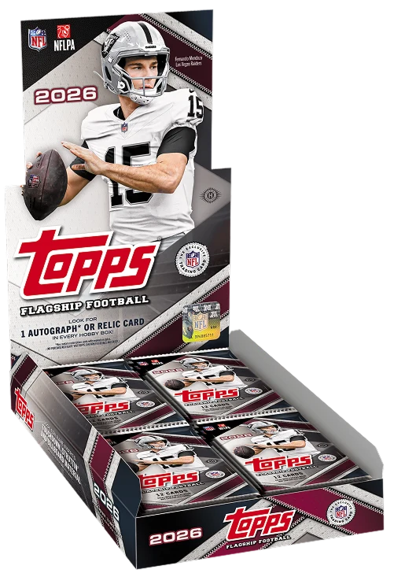

Topps is in my opinion regarded as the king of cards. They have the most variety and the most value in resale besides some past panini cards. As stated before they have many sports mainly focusing on football, baseball, soccer, and even WWE wrestling. and some Ip's such as deadpool, disney, and Marvel both live action and comic cards.

This is specifically the most recent release of football cards in their lineup of cards. The Flagship football. this release includes many variations, numbered cards, 1 of 1 cards. as well as Autographs, game worn patches and even Rookie auto and patch cards which have both in one card.
Topps recently has gained thier status of being a bigger contender because to make sports cards they need to have the licence to the product. For a while topps only had NBA and MLB but now with NFl licence expiring for panini, they own the Big 3 of sports and hence sports cards
you can find this product at most retial locations including walmart, target, even barnes and noble, etc.
retail locations can be hard to find because similarly with pokemon there are scalpers, people who will buy all the
stock to resell at a higher price. however stores as of lately have been working pretty hard to avoid this
and at least with sports cards it has become easier to find them.
You can find out more at The Topps Website as well as purchase directly from them.